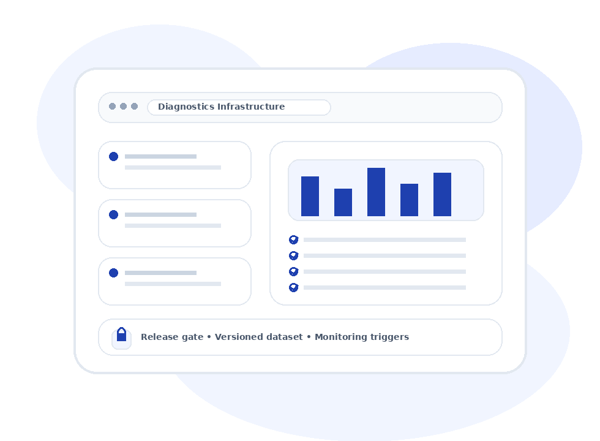

Diagnostics Data Infrastructure
Clinical‑grade datasets
as versioned releases (not spreadsheets)
If your dataset can’t be defended with lineage, agreement, QC artifacts, and monitoring triggers—your model can’t be defended in production. Trinzz installs the reliability operating system behind diagnostic deployment.

SOC 2 Type II
ISO 27001:2022
HIPAA aligned
Release gates + evidence packs
Monitoring triggers
What Trinzz is (in one sentence)
A reliability operating system that turns clinical diagnostic data into versioned dataset releases with QC + consensus evidence, traceable lineage, and monitoring triggers.
Versioned releases
Evidence packs
Monitoring
Audit logs
CG‑DRSDeployment readiness score: quality + traceability + drift readiness.
ConsensusAgreement metrics + adjudication — defensible truth.
QCError taxonomy + pass rates per cohort.
DriftTriggers per protocol/site bin + escalation.
Choose your buyer page
Same platform. Different pain, different messaging, different objections.
Reliability is measurable
We turn trust into numbers—so decisions become objective.
| Signal | Definition | How it prevents failure |
|---|---|---|
| Consensus | Agreement + adjudication rates across reviewers | Eliminates “ground truth” ambiguity in audits and RFPs |
| QC | Error taxonomy + QC pass rates per cohort | Reduces label noise that collapses production performance |
| Drift | Shift thresholds per protocol/site bin | Catches regressions before patient impact |
| Release gate | Acceptance criteria before promotion | Prevents unsafe dataset updates |
Get a Reliability Readout (CG‑DRS) in days
Send a sample + manifest. We return a risk register, validation blueprint, and monitoring triggers your team can operationalize immediately.